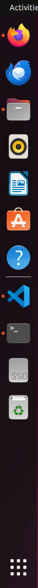
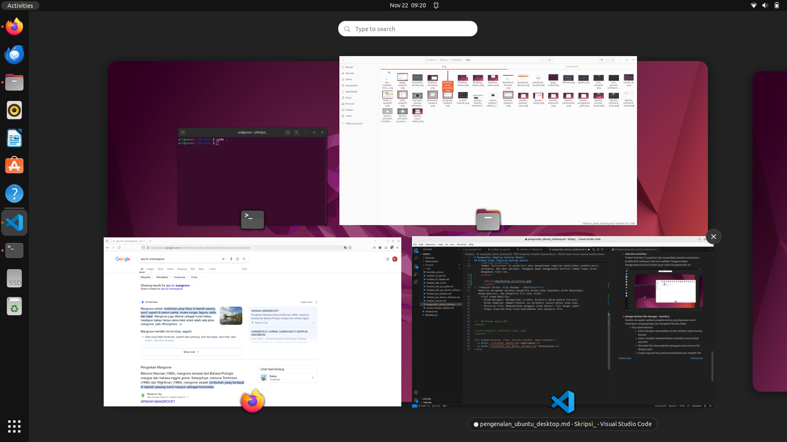

Instalasi Sistem Operasi Ubuntu
Tujuan
Setelah menyelesaikan bab ini pembaca diharapkan dapat:
- Memahami langkah-langkah dasar dalam instalasi sistem operasi Ubuntu.
- Menyiapkan lingkungan yang sesuai untuk instalasi Ubuntu pada perangkat keras.
- Melakukan instalasi sistem operasi Ubuntu pada PC/Laptop.
Ubuntu adalah salah satu distribusi Linux yang populer, digunakan secara luas karena kemudahan penggunaannya dan dukungan komunitas yang besar. Pada bab ini anda akan mempelajari bagaimana mengunduh, menyiapkan, dan instalasi Ubuntu pada PC/Laptop.
Persiapan Instalasi
Sebelum melakukan instalasi, ada beberapa hal yang perlu disiapkan :
-
Spesifikasi Minimum:
- Prosesor : Dual-core 2 GHz
- RAM : 4 GB (direkomendasikan 8 GB)
- Penyimpanan : 25 GB ruang kosong
- USB flash drive (minimal 8 GB)
- Koneksi internet (opsional)
-
Mengunduh ISO Ubuntu:
- Buka situs resmi Ubuntu di http://ubuntu.com.
- Pilih Ubuntu desktop, misalnya Ubuntu Desktop 22.04 LTS.
- Klik link yang tersedia untuk mendapatkan file ISO.

-
Membuat Bootable USB
Alat yang diperlukan untuk membuat bootable USB
- Perangkat Lunak
- Etcher (tersedia untuk Windows, MacOS dan Linux), dapat didownload pada link berikut etcher.balena.io
- Perangkat Keras
- USB Flashdrive minimal 8 GB.
Langkah-Langkah Membuat Bootable USB
-
Sambungkan USB flash drive minimal 8 GB ke komputer.
-
Buka aplikasi Etcher yang sudah diunduh dan diinstal.
-
Pada tampilan utama Etcher, klik Select Image dan pilih file ISO Ubuntu yang telah diunduh.
-
Klik Select Target dan pilih USB yang akan digunakan sebagai media instalasi.
-
Klik Flash! untuk memulai proses pembuatan bootable USB.

-
Tunggu hingga proses selesai, dan lepaskan USB setelah flash selesai.
- Perangkat Lunak
Langkah-Langkah Instalasi Sistem Operasi Ubuntu
-
Booting dari USB
-
Sambungkan USB bootable ke Laptop/PC.
-
Restart komputer dan masuk ke BIOS/UEFI dengan menekan tombol seperti F2, F12, atau Del. Tombol akses BIOS/UEFI dapat dilihat pada tabel berikut :
Merk Laptop/PC Tombol Akses Acer F1, F2, atau CTRL+ALT+ESC ASUS f2 Axioo f2 Dell F2, Del, F12, F1, F3, atau Fn+F1 Fuijitsu f2 HP/Compaq ESC, F10, atau F1 Lenovo F2 atau Fn+F2 MSI Del Samsung f2 Sony Vaio F1, F2, atau F3 Toshiba F2, ESC+F1, atau F2+power Zyrex Del atau Esc -
Ubah urutan booting agar USB menjadi prioritas pertama.
-
Simpan pengaturan dan keluar dari BIOS/UEFI.
-
-
Memulai Instalasi
-
Setelah komputer melakukan booting dari USB, pilih Install Ubuntu.

-
Pilih bahasa yang akan digunakan dan klik Continue.
-
-
Pengaturan Instalasi
-
Keyboard Layout: Pilih tata letak keyboard yang sesuai dan tekan Continue.

-
Updates and Other Software: Pilih apakah ingin menginstall pembaruan dan perangkat lunak pihak ketiga selama instalasi seperti codec multimedia.

-
Installation Type :
- Install Ubuntu alongside [OS lama] untuk dual boot.
- Erase disk and install Ubuntu untuk menggantikan sistem operasi yang ada.
- Something else untuk membuat kustomisasi partisi instalasi secara manual.

-
Time Zone: Pilih zona waktu sesuai lokasi dan klik Continue.

-
-
Konfigurasi Pengguna
-
Masukkan nama pengguna dan password yang diinginkan.
-
Pilih metode login, apakah otomatis atau manual kemudian klik Continue.

-
-
Proses Instalasi dan Penyelesaian
-
Setelah semua pengaturan selesai, proses instalasi akan dimulai.

-
Tunggu hingga instalasi selesai. Setelah itu klik Restart Now.
-
Lepaskan USB ketika komputer melakukan restart.
-
Pengenalan Tampilan Desktop Ubuntu
Tujuan
Setelah menyelesaikan bab ini pembaca diharapkan dapat:
- Memahami struktur antarmuka desktop pada sistem operasi Ubuntu.
- Mengetahui fungsi utama dari elemen-elemen yang terdapat pada antarmuka desktop Ubuntu.
Ubuntu menggunakan GNOME Desktop Environment sebagai antarmuka grafis default. GNOME merupakan salah satu lingkungan desktop yang populer di dunia Linux, dikenal karena antarmukanya yang sederhana dan ramah pengguna, serta kaya akan fitur untuk mendukung produktivitas. Pada bagian ini pembaca akan diperkenalkan dengan elemen-elemen utama yang terdapat pada tampilan desktop Ubuntu.
Elemen Utama Tampilan Desktop Ubuntu
Desktop Utama (Main Desktop)

Desktop utama merupakan area kerja utama setelah pengguna berhasil masuk. Pada GNOME Desktop Environment, desktop memiliki beberapa elemen kunci:
-
Panel Atas (Top Bar):
Panel ini berisi berbagai informasi dan fungsi utama, seperti:-
Waktu dan Tanggal: Menampilkan waktu sistem dan akses cepat ke kalender.

-
Ikon Status Sistem: Menunjukkan status jaringan, daya baterai, dan kontrol suara.

-
-
Dock (Panel Samping):
Dock berfungsi sebagai tempat pintasan aplikasi (shortcuts) yang sering digunakan serta menampilkan aplikasi yang sedang berjalan.- Pintasan bawaan seperti File Manager, Firefox, dan Terminal.
- Aplikasi dapat ditambahkan ke dock untuk memudahkan akses.

-
Overview Activities:
Tombol “Activities” di pojok kiri atas menyediakan tampilan keseluruhan jendela aktif, workspace, dan menu aplikasi. Pengguna dapat menggunakan shortcut tombol Super untuk mengakses fitur ini.
-
Show Applications:
Tombol "Show Applications" di pojok kiri bawah menyediakan tampilan keseluruhan aplikasi yang sudah terinstall. Pengguna dapat menggunakan shortcut tombol Super 2 kali untuk mengakses fitur ini.
Proses Instalasi Aplikasi pada Ubuntu
Tujuan
Setelah menyelesaikan bab ini pembaca diharapkan dapat:
- Memahami proses instalasi aplikasi pada Ubuntu
Proses Request Paket ke APT
Dalam proses instalasi aplikasi di Ubuntu, baik menggunakan Graphical User Interface (GUI) melalui Ubuntu Software atau Command Line Interface (CLI) melalui terminal, sistem menggunakan APT (Advanced Package Tool) sebagai manajer paket. Saat pengguna meminta instalasi aplikasi, APT akan mengunduh paket aplikasi dari repository yang telah dikonfigurasi di sistem, dan memastikan semua dependensi yang diperlukan juga terpasang.
Proses Kerja APT:

- Permintaan Client: Ketika pengguna memulai instalasi melalui GUI atau CLI, APT mengirim permintaan ke server repository untuk mendapatkan paket aplikasi.
- Unduh Paket: APT mengunduh paket dari repository sesuai dengan URL yang terdaftar di sistem.
- Instalasi Paket: APT kemudian memasang paket aplikasi di sistem, memastikan bahwa semua dependensi terpasang dengan benar.
Instalasi Aplikasi di Ubuntu Menggunakan GUI dengan Ubuntu Software
Tujuan
Setelah menyelesaikan bab ini pembaca diharapkan dapat:
- Menginstal perangkat lunak menggunakan GUI pada Ubuntu menggunakan Ubuntu Software.
Langkah-Langkah Instalasi Melalui GUI dengan Ubuntu Software
-
Buka Ubuntu Software
Ubuntu Software merupakan tempat untuk mencari dan melakukan instalasi aplikasi yang tersedia secara resmi di repositori Ubuntu. Untuk membukanya, klik ikon Ubuntu Software yang biasanya ada di dock (panel samping kiri) atau cari melalui menu Applications.
-
Cari Aplikasi yang Ingin di Install
Setelah aplikasi terbuka, terdapat kotak pencarian di bagian kiri atas. Gunakan fitur pencarian ini untuk mengetik nama aplikasi yang ingin diinstal, seperti "Android Studio". Ubuntu Software akan menampilkan hasil pencarian yang relevan. -
Pilih Aplikasi dan Install
Setelah menemukan aplikasi yang diinginkan, klik pada aplikasi tersebut untuk membuka halaman rincian. Di sini anda akan melihat informasi tentang aplikasi, termasuk ukuran, ulasan pengguna, dan pengembangnya. Untuk memulai instalasi tekan tombol Install.
-
Masukkan Password
Karena penginstalan perangkat lunak memerlukan hak akses administrator, anda akan diminta untuk memasukkan password pengguna. Masukkan password akun yang memiliki hak administratif pada sistem, lalu klik Authenticate.
-
Proses Instalasi
Setelah otorisasi berhasil, proses instalasi akan dimulai. anda dapat melihat progress bar yang menunjukkan status instalasi. Jika perangkat lunak yang diinstal memiliki dependensi tambahan, Ubuntu Software akan otomatis mengunduh dan melakukan instalasi juga.
Instalasi Aplikasi di Ubuntu Menggunakan GUI dengan Synaptic Package Manager
Tujuan
Setelah menyelesaikan bab ini pembaca diharapkan dapat:
- Menginstal aplikasi menggunakan GUI pada Ubuntu dengan Synaptic Package Manager.
Langkah-Langkah Instalasi Melalui GUI dengan Synaptic Package Manager
-
Buka Synaptic Package Manager
Untuk membuka Synaptic Package Manager dapat ditemukan pada menu applications atau menjalankan perintahsudo synapticpada terminal. -
Cari Aplikasi yang Diinginkan
Di dalam Synaptic gunakan kotak pencarian di pojok kanan atas untuk mencari aplikasi. Misalnya ketik GIMP untuk mencari aplikasi pengolah gambar. -
Memilih Paket untuk Instalasi
Setelah menemukan aplikasi yang diinginkan, klik kanan pada nama aplikasi tersebut dan pilih Mark for Installation. Synaptic akan menampilkan daftar paket dan dependensi yang diperlukan untuk aplikasi tersebut, yang juga akan ditandai untuk diinstal. Proses penandaan ini memastikan bahwa semua kebutuhan aplikasi sudah terpenuhi sebelum diinstal.
-
Konfirmasi Instalasi
Setelah aplikasi ditandai, klik tombol Apply di toolbar bagian atas untuk memulai proses instalasi.
Sebuah jendela konfirmasi akan muncul, menampilkan daftar aplikasi dan dependensi yang akan diinstal. Klik Apply sekali lagi untuk melanjutkan instalasi.

Synaptic kemudian akan mengunduh dan menginstal aplikasi serta dependensi yang diperlukan.
-
Menyelesaikan Instalasi
Setelah proses instalasi selesai, anda dapat menemukan aplikasi di menu Applications. Dengan Synaptic aplikasi dan semua dependensinya telah diatur dan aplikasi siap digunakan. Jika aplikasi memerlukan pembaruan di masa mendatang, Synaptic akan menampilkannya di daftar pembaruan.
Instalasi Aplikasi di Ubuntu Menggunakan CLI dengan APT
Tujuan
Setelah menyelesaikan bab ini pembaca diharapkan dapat:
- Menginstal perangkat lunak menggunakan CLI pada Ubuntu dengan APT.
Langkah-Langkah Instalasi Melalui CLI dengan APT
-
Buka Terminal
Untuk mengakses CLI, buka terminal dengan menekan kombinasi tombolCtrl + Alt + Tatau cari "Terminal" di menu Applications. Terminal akan terbuka dan siap menerima perintah. -
Perbaruan daftar paket
Sebelum melakukan instalasi aplikasi penting untuk memperbarui daftar paket agar sistem memiliki informasi terbaru tentang perangkat lunak di repositori. Jalankan perintahsudo apt updatekemudian masukkan password ketika diminta, kemudian sistem akan mengunduh daftar paket terbaru. -
Install Aplikasi
Setelah daftar paket diperbarui anda dapat melakukan instalasi aplikasi dengan perintahapt install. Sebagai contoh untuk instalasi VirtualBox jalankan perintahsudo apt install virtualbox, sistem akan mengunduh dan melakukan instalasi aplikasi beserta dependensinya.
-
Konfirmasi Instalasi
Jika ada konfirmasi untuk melanjutkan instalasi, sistem akan menampilkan prompt yang meminta anda mengetik "y" (yes) untuk melanjutkan. Tekan y dan Enter untuk konfirmasi. -
Instalasi Selesai
Setelah proses selesai, aplikasi siap digunakan. Aplikasi yang telah diinstal dapat ditemukan di menu Applications, atau bisa langsung dibuka melalui terminal dengan mengetik nama aplikasinya.
Instalasi Aplikasi di Ubuntu Menggunakan CLI dengan APT
Tujuan
Setelah menyelesaikan bab ini pembaca diharapkan dapat:
- Menginstal perangkat lunak menggunakan CLI pada Ubuntu dengan APT.
Langkah-Langkah Instalasi Melalui CLI dengan APT
-
Buka Terminal
Untuk mengakses CLI, buka terminal dengan menekan kombinasi tombolCtrl + Alt + Tatau cari "Terminal" di menu Applications. Terminal akan terbuka dan siap menerima perintah. -
Perbaruan daftar paket
Sebelum melakukan instalasi aplikasi penting untuk memperbarui daftar paket agar sistem memiliki informasi terbaru tentang perangkat lunak di repositori. Jalankan perintahsudo apt updatekemudian masukkan password ketika diminta, kemudian sistem akan mengunduh daftar paket terbaru. -
Install Aplikasi
Setelah daftar paket diperbarui anda dapat melakukan instalasi aplikasi dengan perintahapt install. Sebagai contoh untuk instalasi VirtualBox jalankan perintahsudo apt install virtualbox, sistem akan mengunduh dan melakukan instalasi aplikasi beserta dependensinya. -
Konfirmasi Instalasi
Jika ada konfirmasi untuk melanjutkan instalasi, sistem akan menampilkan prompt yang meminta anda mengetik "y" (yes) untuk melanjutkan. Tekan y dan Enter untuk konfirmasi. -
Instalasi Selesai
Setelah proses selesai, aplikasi siap digunakan. Aplikasi yang telah diinstal dapat ditemukan di menu Applications, atau bisa langsung dibuka melalui terminal dengan mengetik nama aplikasinya.
Instalasi Aplikasi di Ubuntu Menggunakan CLI dengan SNAP
Tujuan
Setelah menyelesaikan bab ini pembaca diharapkan dapat:
- Menginstal perangkat lunak menggunakan CLI pada Ubuntu dengan SNAP.
Langkah-Langkah Instalasi Melalui CLI dengan FLATPAK
-
Memastikan Flatpak Terinstal
Pada ubuntu 22.04 LTS secara bawaan sudah terinstall snap, untuk memastikan dapat menggunakan perintahsnap versionpada terminal.
-
Mencari Aplikasi di Snapcraft
Untuk mencari aplikasi yang diinginkan, buka situs Snapcraft di browser, disana anda dapat menjelajahi aplikasi yang tersedia.
-
Menginstall Aplikasi dengan Snap
Setelah menemukan aplikasi di Snapcraft, salin script instalasi yang ditampilkan, dan gunakan perintah tersebut untuk instalasi. Sebagai contoh, untuk menginstal freeCAD menggunakansudo snap install freecad.Kemudian snap akan mendownload aplikasi beserta dependensinya dan menginstalnya secara otomatis.

-
Instalasi Selesai
Setelah proses selesai, aplikasi siap digunakan. Aplikasi yang telah diinstal dapat ditemukan di menu Applications, atau bisa langsung dibuka melalui terminal dengan mengetik nama aplikasi.
Instalasi Paket .deb di Ubuntu Menggunakan GUI dengan Ubuntu Software
Tujuan
Setelah menyelesaikan bab ini pembaca diharapkan dapat:
- Menginstal paket .deb menggunakan Ubuntu Software.
Langkah-Langkah Instalasi Paket .deb dengan Ubuntu Software
-
Mengunduh File.deb
Langkah pertama adalah mengunduh file .deb dari sumber terpercaya. Sebagai contoh, unduh aplikasi Visual Studi Code dari situs resminya, yaitu code.visualstudio.com/download. Pastikan file tersimpan pada direktori yang mudah diakses, seperti Downloads.
-
Buka File.deb
Setelah pengunduhan selesai, temukan file yang telah diunduh pada direktori penyimpanan. Klik kanan pada file .deb pilih Open With Other Application kemudian pilih software install, maka aplikasi ubuntu software akan terbuka secara otomatis.
-
Memulai Instalasi
Klik tombol Install pada antarmuka Ubuntu Software.
Jika diminta, masukkan kata sandi administrator untuk mengonfirmasi tindakan. Proses instalasi akan berjalan secara otomatis.

-
Memverifikasi Instalasi
Setelah instalasi selesai, aplikasi akan tersedia di menu utama sistem operasi atau dapat membuka aplikasi dari menu Applications.
Instalasi Paket .deb di Ubuntu Menggunakan GUI dengan GDebi Package Installer
Tujuan
Setelah menyelesaikan bab ini pembaca diharapkan dapat:
- Menginstal paket .deb menggunakan GDebi Package Installer.
Langkah-Langkah Instalasi Paket .deb dengan Ubuntu Software
-
Menginstal GDebi Package Installer
Jika aplikasi GDebi belum terinstal pada sistem, pengguna dapat menginstalnya terlebih dahulu. Hal ini dapat dilakukan melalui terminal dengan perintah sudo apt install gdebi. -
Buka File.deb
Setelah pengunduhan selesai, temukan file yang telah diunduh pada direktori penyimpanan. Klik kanan pada file .deb pilih Open With Other Application kemudian pilih GDebi Package Installer, File akan terbuka di antarmuka GDebi. -
Memulai Instalasi
Pada jendela GDebi, klik tombol Install Package untuk memulai proses instalasi. GDebi akan secara otomatis memeriksa dan menginstal dependensi yang diperlukan.Jika diminta, masukkan kata sandi administrator untuk mengonfirmasi tindakan. Proses instalasi akan berjalan secara otomatis.
-
Memverifikasi Instalasi
Setelah instalasi selesai, aplikasi akan tersedia di menu utama sistem operasi atau dapat membuka aplikasi dari menu Applications.
Instalasi Paket .deb di Ubuntu Menggunakan CLI
Tujuan
Setelah menyelesaikan bab ini pembaca diharapkan dapat:
- Menginstal paket .deb menggunakan CLI.
Langkah-Langkah Instalasi Paket .deb dengan CLI
-
Mengunduh File.deb
Langkah pertama adalah mengunduh file .deb dari sumber terpercaya. Sebagai contoh, unduh aplikasi Visual Studi Code dari situs resminya, yaitu code.visualstudio.com/download. Pastikan file tersimpan pada direktori yang mudah diakses, seperti Downloads. -
Buka Terminal dan Navigasi ke Folder Unduhan
Setelah pengunduhan selesai, buka terminal dengan kombinasi tombol Ctrl + Alt + T, kemudian navigasikan ke folder tempat file .deb disimpan dengan perintah cd ~/Downloads. -
Install File .deb dengan dpkg
Jalankan perintah sudo dpkg -i nama_file.deb, gantilah nama_file.deb menjadi nama file yang baru saja di download misalnya paket Visual Studio Code. Nama paket file Visual Studio Code adalah code_1.93.1-1726079302_amd64.deb, sehingga untuk melakukan instalasi menggunakan perintah sudo dpkg -i code_1.93.1-1726079302_amd64.deb.
-
Perbaiki Dependensi (Jika Ada)
Jika paket .deb memiliki dependensi yang belum terpasang, anda akan melihat pesan kesalahan. Untuk memperbaikinya jalankan perintah sudo apt --fix-broken install untuk instalasi dependensi yang diperlukan. -
Instalasi Selesai
Setelah dependensi diperbaiki aplikasi siap digunakan. Buka dari menu Applications atau langsung dari terminal dengan mengetikkan nama aplikasi.